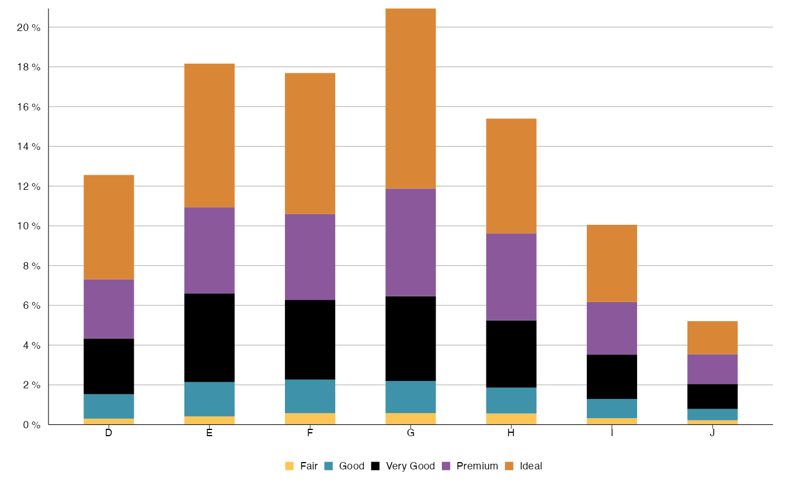
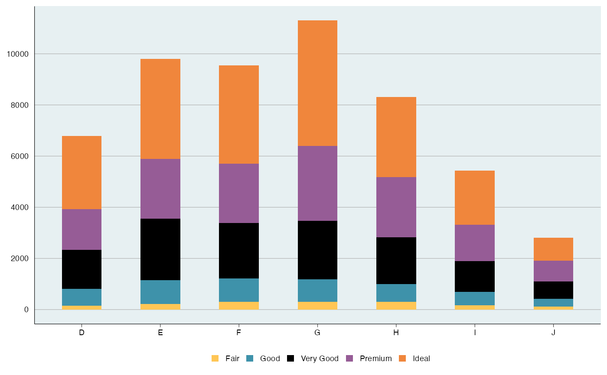
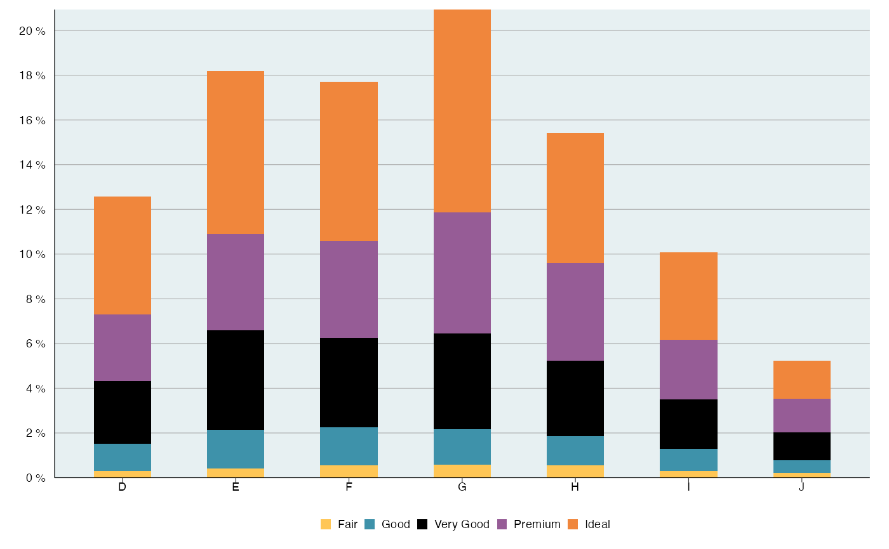
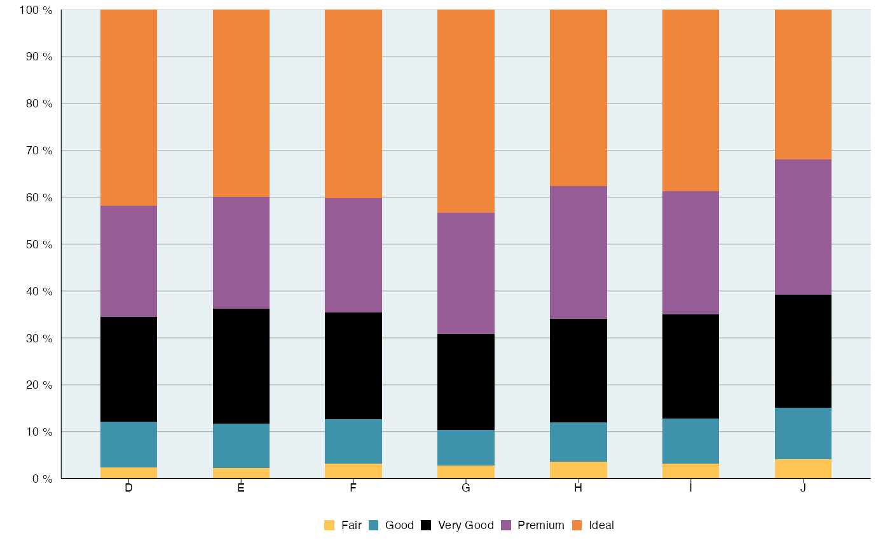
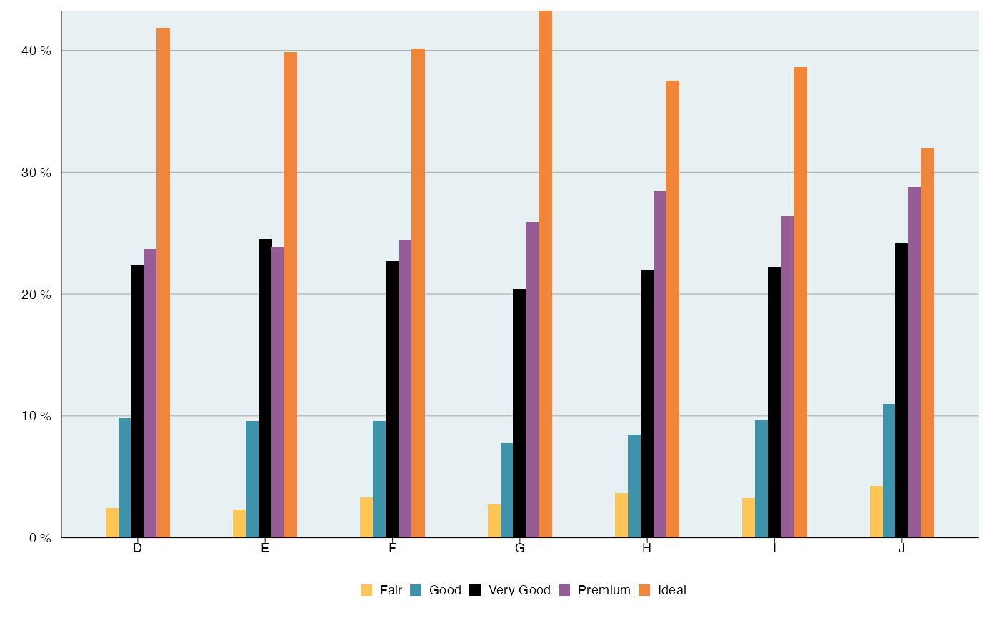
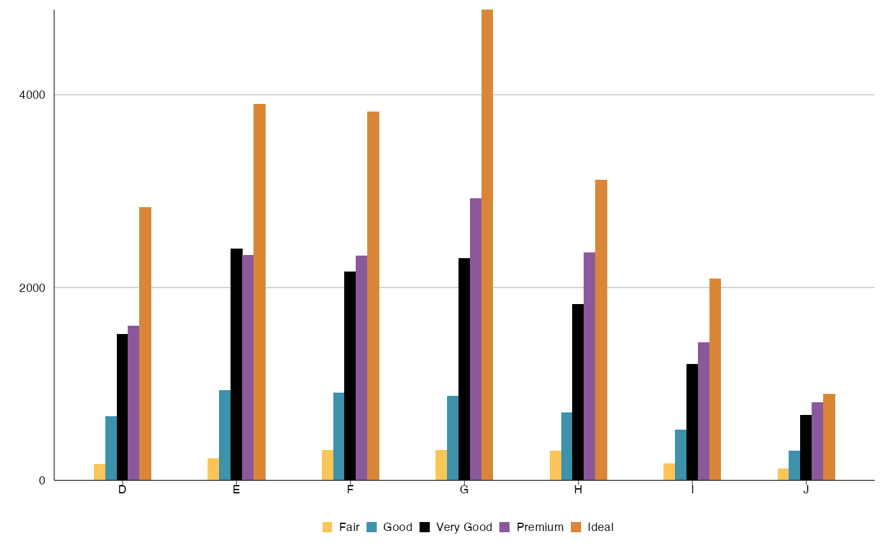
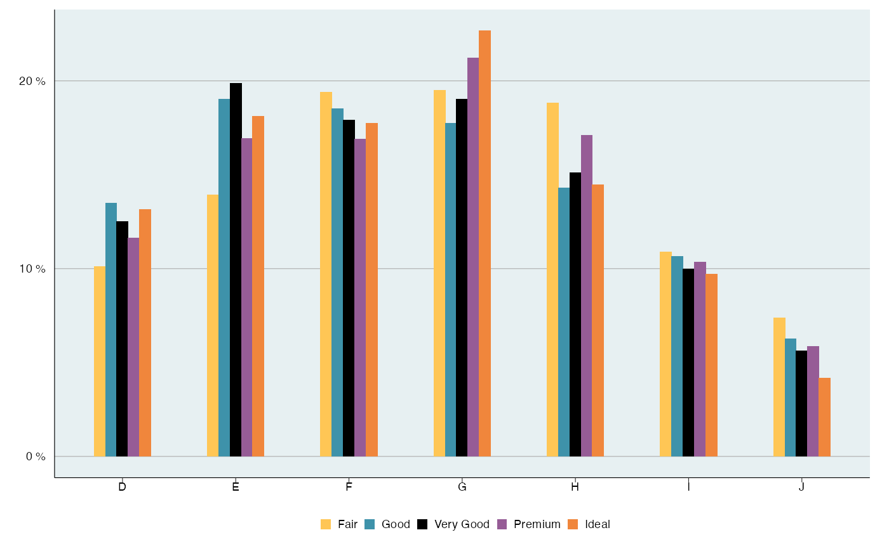
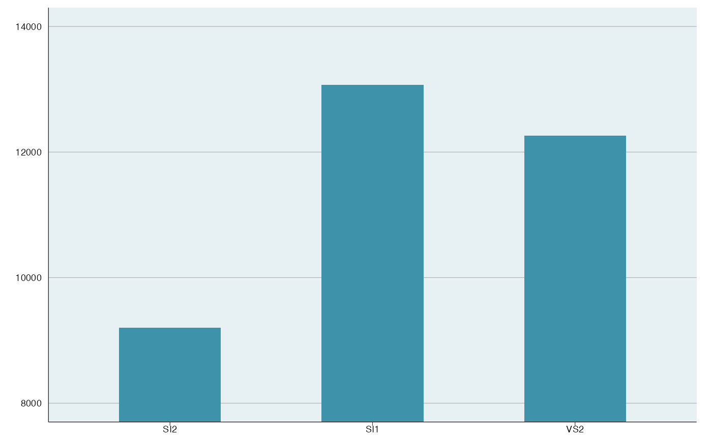

Plot a bar plot using ggplot2.
bar_plot(
df,
x_var,
fill_var = NULL,
y_var = NULL,
style = c("stack", "fill", "dodge")[1],
group_by_x_var = TRUE,
y_percent = TRUE,
percent_accuracy = 1,
y_lim = NULL,
y_breaks = 2000,
x_breaks = NULL,
y_breaks_end = 1e+05,
title = NULL,
subtitle = NULL,
y_lab = NULL,
x_lab = NULL,
fill_colors = NULL,
legend_labels = ggplot2::waiver(),
label_breaks = ggplot2::waiver(),
legend_row = NULL,
legend_col = NULL,
expand = FALSE,
flip = FALSE,
...
)Data frame.
Variable for x axis, use string name.
Recommended that x_var is in character in df.
Variable for the different colors in bars,
use string name.
Use NULL if only one color for bars.
Variable for y axis, if NULL, count is used.
3 different styles of bar plots,
"stack", "fill", or "dodge".
fill requires y_percent = TRUE.
Only relevant for style dodge. Boolean indicating
if percentages should be for x_var or fill_var.
If TRUE, y axis is in percent form.
Otherwise in count form.
Set accuracy for scales::percent_format().
Limit on y axis.
Length between each break on x/y axis.
Break end, default for 100,000. Works for all count values below that.
Plot title, NULL if no title.
Small text under title, NULL if no subtitle.
Y-axis label, use NULL for no label.
X-axis label, use NULL for no label.
Color of the different categories in fill_var.
Label for each legend key.
Order of the legend keys.
How many rows for the legends.
How many columns for the legends.
If TRUE, the margins around the data are kept.
If TRUE, x and y axis changes positions making
the bars go horizontally instead of vertically.
arguments passed to theme_slr()
ggplot object containing bar plot.
# Example data
df <- ggplot2::diamonds
# Style stack
bar_plot(df, 'color', 'cut', y_breaks = 2)

bar_plot(df, 'color', 'cut', y_percent = FALSE, y_breaks = 2000)

# Style stack with y variable included
df2 <-
dplyr::group_by(df, color, cut) %>%
dplyr::summarise(y = dplyr::n(), .groups = "drop_last")
bar_plot(df2, 'color', 'cut', y_var = 'y', y_breaks = 2)

# Style fill
bar_plot(df, 'color', 'cut', y_breaks = 10, style = 'fill')

# Style dodge grouped by x_var (color in this case)
bar_plot(df, 'color', 'cut', style = 'dodge', y_breaks = 10)

bar_plot(df, 'color', 'cut', style = 'dodge', y_percent = FALSE, y_breaks = 2000)

# Style dodge grouped by fill_var (cut in this case)
bar_plot(df, 'color', 'cut', style = 'dodge', group_by_x_var = FALSE, y_breaks = 10)

# Since bar_plot() returns ggplot object, it is possible to add more features
# Here we zoom the plot using coord_cartesian():
df3 <- dplyr::filter(df, clarity %in% c('SI1', 'SI2', 'VS2'))
bar_plot(df3, 'clarity', style = 'dodge', y_percent = FALSE, y_breaks = 2000) +
ggplot2::coord_cartesian(ylim = c(8000, 14000))
